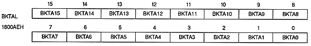
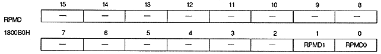
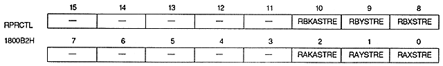

BKCLMD | Back screen color |
0 | Make a single color |
1 | Specify line by line |
BKTA18 ~ BKTA16 | 1800ACH | bits 2-0 | |
BKTA15 to BKTA0 | 1800AEH | bit 15 ~ 0 | |

RPMD1 | RPMD0 | Mode | Rotation parameters used and usage | ||||||||
0 | 0 | 0 | |||||||||
0 | 1 | 1 | |||||||||
1 | 0 | 2 | |||||||||
1 | 1 | 3 |
